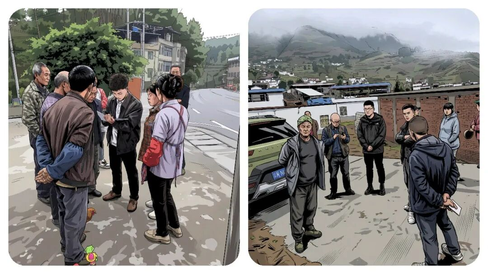

为什么“乡镇干部”在开展群众工作的时候，害怕群众“生气拍桌”？这 5 招，教你克服沟通焦虑。
原创
点击关注👉🏻
点击关注👉🏻
田间烟火
在小说阅读器读本章
去阅读
在小说阅读器中沉浸阅读
点击上方
蓝字
关注我们
田间烟火🔥
大家好，我是【田间烟火🔥】～
开聊前，我先问大家一个问题：
你觉得乡镇年轻干部最怕的工作是什么？
A. 熬夜加班，写材料报台账
B. 下乡跑腿，奔波走村入户
C. 直面群众，处理情绪化矛盾
我在基层深耕多年，见过太多新人成长，熬过 A 、扛过 B ，最后发现 C 才是新人最大的难关！
为什么这么说呢
？
不废话了，今天我们就来聊聊：
如果有群众“对着你拍桌子…”，你该怎么破除直面群众时内心的胆怯？
你到底该如何破局呢？

01
新干部怕直面群众，是普遍现象
刚到乡镇工作的小伙伴，很多时候不是怕加班，不是怕业务难懂，最怕的是
面对群众
。
一边是陌生号码打来的电话，一边是老百姓站在门口要说事，结果一个激动起来，谁都顶不住。
这种状况说老实话，大多数人刚上岗都会遇到，毕竟一张嘴开口，面对的是各种诉求、甚至情绪激烈的责骂，有点心理阴影也正常，
谁不是这么过来的
？
对年轻干部，心理上的第一道关很难跨。
身边不少人吐槽，只要遇到情绪失控的老乡，腿软、脑袋空，嘴也说不出话。
有的人下乡久了，心理压力更大，只要一想到要单独下村都发怵。
这种情况不只是现在，早些年也一样。
现在有些小镇，年轻干部在调解邻里矛盾时，被群众围着骂、拍桌子发泄，就是常有的事。
新手当场懵圈，有人甚至一度不敢再接群众来访。
大家都说，不会跟群众打交道就没法干下去。那到底怎么“脱敏”，怎么挺过这段阵痛？
02
破除胆怯的五个实用方法
认清定位：群众的火通常不是冲着你
多数时候，群众的火不是冲着你本人
。
背后其实是憋了一肚子委屈，早就跑了几个部门没解决，到你这里，只是
“最后一站”
。
很多年轻人想，不是自己能力不够？
是不是有啥说错？
其实不是，人家恼的是事本身，你正好站在这儿
。
明白了这点，心里就能稳一点。
一个现实例子，北京某社区居委新员工，刚入职就遭到退休居民拍桌子质问。后来他定了心，认清角色，慢慢能坦然面对。
学会倾听：别急着解释，先让群众说完
还有一种情况，“
解释太快
”容易让
矛盾更大
。
刚工作的人，往往急着讲政策，群众还没说两句就打断。
结果群众觉得不被尊重，火气更大。
首先得让老百姓把话说完，问题才容易解决。
你只点头或者递杯茶，先把情绪稳住，等声音小了，再慢慢谈事，效果要好得多。
守住底线：实话实说，给出明确节点
最常见的难题是
“怕答应办不到”
。
像经常出现的
农村养老
、
土地纠纷
，你不敢正面回答，结果群众觉得你推诿。
其实，只要说清楚：
“这个事我没权限，但可以请示问问领导”
，给出具体时间节点，说到做到，即使结果不理想，群众也会理解。
某地政务大厅，工作人员就用这种方式，群众虽有不满，但态度变得温和不少。
跟老同事学习：现场看一遍胜过自己练十遍
新手沉浸在业务学习里，并不懂怎么处理情绪。
其实，解决这个压力最有效的办法，就是找个老同事带你出门。
看他们怎么开场、接话、应对激烈场面，学久了，也就能慢慢适应。
某村调解员带新人，跑了十几趟现场，最后新人独自上阵，也能轻松应对。
打好政策基础：政策吃透了，底气自然来
胆怯不是实力问题，而是心理防线。
底气从哪里来？
政策要吃透。
有时一问三不知，群众就不信任你。
你把这个流程、文件、负责人的联系方式都背熟了，随手一查就能回应。
政策说清楚了，群众自然先
“软三分”
。
有一名乡镇社会事务员，刚上岗时被问到低保政策，语焉不详的时候群众不买账。后来把政策熟读，回答精准，交流顺利多了。
03
面对胆怯：这是成长的必经之路
说到反向情况，有些人一开始不是怯场，而是太“
刚
”了。
某村年轻新干部，坚定硬刚群众，结果没几天被投诉
。
后来领导提醒，沟通靠“
软
”，
不是硬碰硬
。
事实说明，一味硬气，容易激化矛盾，反而不利处理。
当然，环境不同，压力大小也是有不一样的表现的。
大城市区街道，群众文化水平较高，沟通容易。
对于那些，偏远农村、居民诉求多、沟通难度大，需要更强心理素质。
也有人天生外向型，适应快；但大多数还是要靠历练消除心底的怯懦。
一次次摸爬滚打，慢慢就能成长。
再遇到激烈场面，不慌了，腿往前迈一步，就是进步。
成长过程里，胆怯不是错，只要勇敢向前，就能看到变化。
基层历练这几年，成了将来最珍贵的回忆。
对于那些想提升自己的干部们，别抱侥幸，也不能觉得自己特别“
失败
”。
这道心理关，大多数人都会经历，有的人需要时间长一些，有的人快一点。
无论如何，主动面对、不断尝试，才能真正适应基层工作。
等未来成了“
老猫
”，回头看这些阵痛，都是最真实的财富。
乡镇年轻干部的心理压力，不是难题，也不是奇怪。
面对群众的勇气和能力，需要磨炼
。
简而言之，五步：
认清定位、学会倾听、守住底线、跟老同事学习、打好政策基础，就是解法。
只要你一步步走过来，困难自然会消减。
每一次被骂、被指责，都是你变得更坚强的过程。
未来路还长，勇敢迈出去，这才是成长的真相。
🛒点击下方👇🏻
你刚下村时，有没有被群众情绪震慑、不敢沟通的经历？
欢迎评论区聊聊你的感受呗～
分享
收藏
点赞
在看